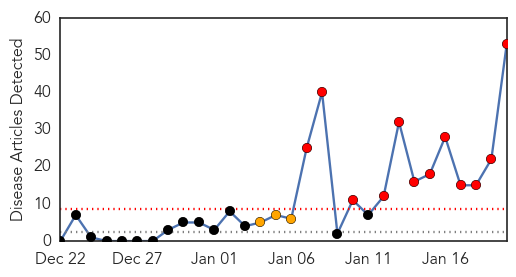

Measles
30-Day Web Trend
12 alerts, 3 warnings

30-Day Twitter Trend
0 alerts, 0 warnings

Article Locations

Article Confidences

Top Articles:
- 0.984
- Measles Outbreak In California Draws Attention To Importance Of Vaccination
- 0.978
- Santa Cruz health officials: Vaccinate your kids
- 0.977
- KATU.com - Portland News, Sports, Traffic Weather and Breaking News - Portland, Oregon
- 0.976
- Second measles case here linked to Disneyland outbreak
- 0.973
- 52 cases of measles linked to Disneyland outbreak confirmed
- 0.971
- Several Disneyland workers diagnosed with measles
- 0.969
- Several Disneyland Employees Diagnosed With Measles
- 0.959
- More Possible Measles Cases Investigated; Sharp Briefly Closes Clinic As Precaution
- 0.958
- Measles outbreak continues to spread as schools tell students to stay home
- 0.956
- Disneyland measles outbreak continues to spread
- 0.953
- Texas: Tarrant County resident measles positive, traveled to India
- 0.952
- Lane County confirms case of measles
- 0.948
- Several Disneyland employees diagnosed with measles
- 0.945
- 22-month-old girl is the latest to be hit by measles outbreak linked to Disney California
- 0.944
- Lane County measles case first in Oregon tied to Disneyland outbreak
- 0.943
- Measles update: Unvaccinated kids told to stay home from Calif. school
- 0.939
- Tarrant County resident diagnosed with measles
- 0.935
- Tarrant County resident tests positive for measles
- 0.933
- Vista clinic cleared of measles exposure
- 0.925
- Why measles are back, and how the illness spreads
- 0.922
- Measles Outbreak Hits Disneyland California, Spreads To 3 States
- 0.919
- School near Disneyland warns parents that student has measles
- 0.919
- School near Disneyland warns parents that student has measles
- 0.909
- School near Disneyland warns parents that student has measles
- 0.903
- Tarrant County resident returns from India with case of measles
- 0.886
- Northern Voices Online Disneyland employees diagnosed with measles
- 0.879
- Disney measles outbreak includes 5 theme park employees
- 0.864
- Disneyland measles outbreak prompts warning at high school
- 0.855
- Measles Outbreak - Story
- 0.833
- Tarrant County Resident Tests Positive for Measles
- 0.823
- Unvaccinated students dismissed from H.B. High after measles exposure
- 0.818
- Patient With Measles Might Have Exposed North Texans « CBS Dallas
- 0.813
- Five Disneyland Resort workers confirmed with measles
- 0.811
- Measles spread through Orange County
- 0.800
- Unvaccinated Students Told To Stay Home Over Measles Fear
- 0.791
- Tickborne Relapsing Fever endemic to the Bitterroot
- 0.756
- Unvaccinated students told to stay home over measles fears in California
- 0.747
- High School Sends Unvaccinated Students Home
- 0.716
- Several Disneyland workers diagnosed with measles
- 0.715
- Measles vaccination campaign to start on January 26 in Punjab
- 0.691
- Some SoCal students told to stay home over measles fears
- 0.688
- Measles Fears Prompt Huntington Beach Schools to Tell Unvaccinated Students to Stay Home
- 0.663
- California high school sends two dozen unvaccinated students home amid measles outbreak
- 0.653
- Student with measles at Calif. high school might have exposed others
- 0.653
- Student with measles at Calif. high school might have exposed others
- 0.638
- Unvaccinated students at Huntington Beach HS sent home amid OC measles outbreak
- 0.626
- City Health Department raising awareness on measles
- 0.603
- Officials: Measles Cases Linked to Disneyland Parks Up to 51
- 0.589
- Measles warning for passengers on Singapore flight to Perth
- 0.579
- Parents Who Shun Vaccines Tend To Cluster, Boosting Children's Risk : Shots
Showing top 50 articles...
Top Tweets:
-
No tweets found for Jan 20, 2015
Swine Flu
30-Day Web Trend
4 alerts, 3 warnings

30-Day Twitter Trend
0 alerts, 0 warnings

Article Locations

Article Confidences

Top Articles:
- 1.000
- Swine flu cases on rise
- 1.000
- 169 swine flu patients in Telangana; 7 deaths this year
- 0.999
- Flu shots advisable for high-risk group: expert
- 0.999
- Swine flu hits Telangana hard
- 0.999
- 169 Swine Flu Patients in Telangana; 7 Deaths This Year
- 0.999
- 27 Test Positive for Swine Flu in Telangana
- 0.999
- Swine flu spreads, Hyderabad girl dies of disease
- 0.997
- Indiablooms - First Portal on Digital News Management
- 0.996
- Gurgaon reports third death due to swine flu this year
- 0.996
- 25 new cases of swine flu reported in Hyderabad
- 0.994
- Telangana Chief Secretary checks swine flu status in Hyderabad
- 0.990
- TN reports first H1N1 death, govt says no need for panic
- 0.985
- Model predicts public response to disease outbreaks
- 0.983
- Swine Flu Kills 3 More, Infects 50 in a Day!
- 0.973
- Swine flu: police may suspend drunk-driving check
- 0.963
- Two succumb to swine flu as death toll touches 9 in Andhra Pradesh
- 0.961
- Seven deaths, 173 swine flu cases reported from Andhra Pradesh and Telangana, Video Gallery
- 0.949
- Seven deaths, 173 swine flu cases reported from Andhra Pradesh and Telangana
- 0.740
- H1N1 Strikes its 1st Fatal Blow in City, Takes Away Rail Staffer
Top Tweets:
-
No tweets found for Jan 20, 2015